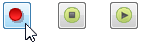
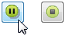
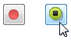

Record a video
-
On the status bar in the bottom-right corner of the Application window, choose the Record command
 .
. -
On the Record Video dialog box, define the area to record.
-
Click the Record button.

-
To Pause, click the Pause button.

The Pause button changes to a Record button to resume recording.
-
To end the recording, press the Stop button.

The recorded video automatically plays in the default Windows media player.
-
Close the player
-
On the Record Video dialog box you can do the following:
-
Click Discard to delete the video you just recorded and return all settings to default.
-
Click Save to save the recording.
-
Click Upload to launch the Upload to YouTube dialog box.
-
-
Close the Record Video dialog box.